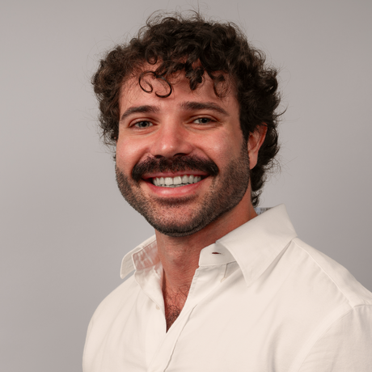

Community Spotlight

Postdoctoral Scholar
Samuel Patrone
Samuel Patrone is a postdoctoral scholar working with Professor Emeritus Aneesh Manohar.
- Department Field
- Theoretical particle physics and cosmology
Research Focus/Work
I interrogate the universe about the fundamental laws of nature. So far, it has been reluctant to answer. As a theoretical particle physicist and cosmologist, I explore the earliest moments of cosmic history and questions such as what dark matter is, why there is more matter than antimatter, and how we might discover new particles or forces. What excites me most is turning theoretical ideas into predictions we can test in laboratories or by looking at the skies.
What inspired you to pursue physics?
I’ve always been fascinated by humanity’s effort to understand the world around us. A few fundamental principles can explain an extraordinary variety of phenomena, from neutron stars to the delicate physics of cacio e pepe. My eyes light up when a model makes predictions I can test, whether in a lab, among the stars, or in a pan of spaghetti.
What’s a challenge you’ve faced and how did you overcome it?
One challenge has been learning to keep making progress when there is no clear path to an answer. My PhD advisor, Mark B. Wise, taught me that even the most intimidating problems become approachable when you break them into small steps. Or, to quote another source of wisdom: “We live and we learn to take one step at a time; there’s no need to rush, it’s like learning to fly, or falling in love.” (Nevil, R., et al.)
What’s your favorite part about being in the department (or why did you choose to come to UCSD)?
I’m excited by all of the potential collaborations with my group here at UCSD, where a casual conversation can turn into an afternoon at the blackboard, working through a physics problem together. Since my spirit animal is an otter, I’m also hoping to spend some time in the water and learn how to surf, so I can develop a more experimental understanding of waves.
What’s a fun fact about you?
I’m Italian, I enjoy making ragù and tiramisù, and my robot vacuum is named Feynman. His contributions to physics are limited, but his contributions to keeping my floors tidy are statistically significant.
Any words of wisdom?
“If my grandmother had wheels, she would have been a bike!” A vital reminder in theoretical physics: if you change your initial conditions to fit your conclusion, you are no longer modeling reality.
Anything else you would like to share?
I’m excited to be joining the UCSD community and look forward to talking about the early universe or exchanging recipes; feel free to get in touch or swing by Mayer 4422 to say “Ciao!”.
Originally published in This Week in Physics, the newsletter of the UC San Diego Department of Physics (26 October 2026), and shared on @ucsdphysics on Instagram (30 October 2026).
← Back to samuelpatrone.com